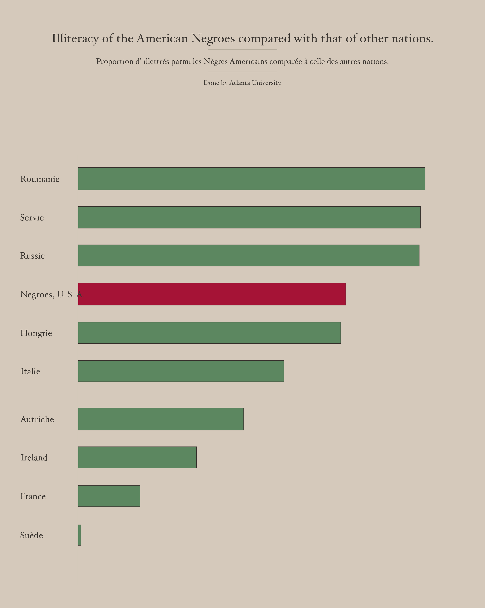

Show the R code
serif <- c(intersect(c("Hoefler Text", "Baskerville", "Georgia"),
systemfonts::system_fonts()$family), "serif")[1]
# Colours sampled from the scan: the average of each kind of watercolour.
in_bars <- function(want_red) {
b <- filter(bars, red == want_red)
idx <- unlist(map(seq_len(nrow(b)), \(i) {
rr <- b$top[i]:b$bottom[i]; cc <- b$left[i]:b$right[i]
as.vector(outer(rr, (cc - 1) * nrow(R), `+`))
}))
idx <- idx[paint[idx]]
rgb(mean(R[idx]), mean(G[idx]), mean(B[idx]))
}
board <- rgb(mean(R[1500:1560, 300:900]), mean(G[1500:1560, 300:900]), mean(B[1500:1560, 300:900]))
ink <- "#3b3631"
green <- in_bars(FALSE)
red <- in_bars(TRUE)
# Pixel space of the half-resolution scan, y flipped so the top is up.
H <- nrow(R); W <- ncol(R); px_per_point <- plate$px[plate$red] / ANCHOR
x0 <- median(bars$left)
recreation <- ggplot(plate) +
geom_rect(aes(xmin = x0, xmax = x0 + pct * px_per_point,
ymin = H - bottom, ymax = H - top, fill = red),
colour = ink, linewidth = .2) +
scale_fill_manual(values = c(`FALSE` = green, `TRUE` = red), guide = "none") +
annotate("segment", x = x0, xend = x0, y = H - 400, yend = 0 + 60,
colour = "#cfc6b5", linewidth = .3) +
geom_text(aes(x = 52, y = H - (top + bottom) / 2, label = label),
hjust = 0, family = serif, size = 3, colour = ink) +
annotate("text", x = W / 2, y = H - 98, family = serif, size = 4.1, colour = ink,
label = "Illiteracy of the American Negroes compared with that of other nations.") +
annotate("text", x = W / 2, y = H - 158, family = serif, size = 2.6, colour = ink,
label = "Proportion d' illettrés parmi les Nègres Americains comparée à celle des autres nations.") +
annotate("text", x = W / 2, y = H - 213, family = serif, size = 2.2, colour = ink,
label = "Done by Atlanta University.") +
annotate("segment", x = W / 2 + c(-90, -90), xend = W / 2 + c(90, 90),
y = H - c(128, 186), yend = H - c(128, 186), colour = "#b9b0a0", linewidth = .25) +
coord_cartesian(xlim = c(0, W), ylim = c(0, H), expand = FALSE) +
theme_void() +
theme(plot.background = element_rect(fill = board, colour = NA))
recreation